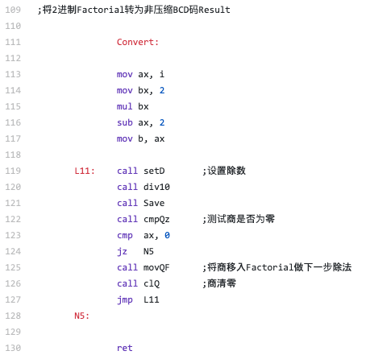
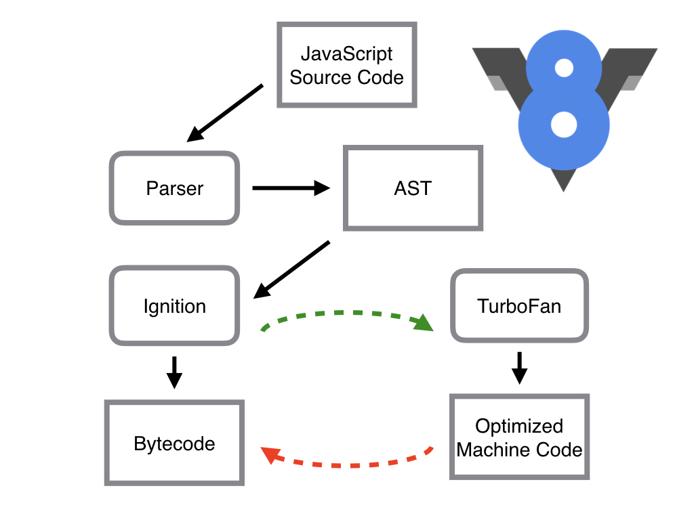
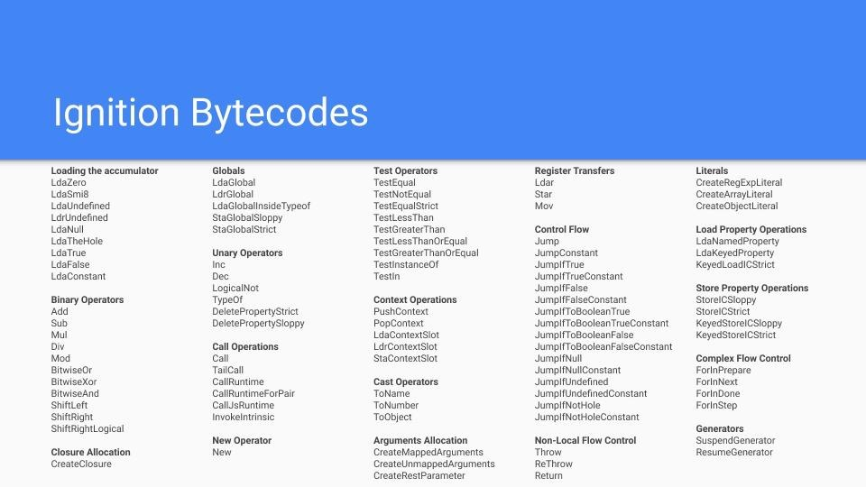
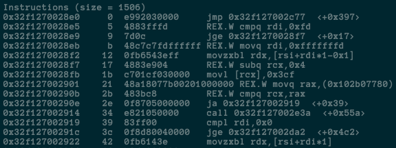

原文连接:https://www.cnblogs.com/fundebug/p/how-does-v8-work.html
摘要： 性能彪悍的V8引擎。
《JavaScript深入浅出》系列：
- JavaScript深入浅出第1课：箭头函数中的this究竟是什么鬼？
- JavaScript深入浅出第2课：函数是一等公民是什么意思呢？
- JavaScript深入浅出第3课：什么是垃圾回收算法？
- JavaScript深入浅出第4课：V8是如何工作的？
最近，JavaScript生态系统又多了2个非常硬核的项目。
大神Fabrice Bellard发布了一个新的JS引擎QuickJS，可以将JavaScript源码转换为C语言代码，然后再使用系统编译器(gcc或者clang)生成可执行文件。
Facebook为React Native开发了新的JS引擎Hermes，用于优化安卓端的性能。它可以在构建APP的时候将JavaScript源码编译为Bytecode，从而减少APK大小、减少内存使用，提高APP启动速度。
作为JavaScript程序员，只有极少数人有机会和能力去实现一个JS引擎，但是理解JS引擎还是很有必要的。本文将介绍一下V8引擎的原理，希望可以给大家一些帮助。
JavaScript引擎
我们写的JavaScript代码直接交给浏览器或者Node执行时，底层的CPU是不认识的，也没法执行。CPU只认识自己的指令集，指令集对应的是汇编代码。写汇编代码是一件很痛苦的事情，比如，我们要计算N阶乘的话，只需要7行的递归函数：
function factorial(N) {
if (N === 1) {
return 1;
} else {
return N * factorial(N - 1);
}
}代码逻辑也非常清晰，与阶乘数的学定义完美吻合，哪怕不会写代码的人也能看懂。
但是，如果使用汇编语言来写N阶乘的话，要300+行代码n-factorial.s：

这个N阶乘的汇编代码是我大学时期写的，已经是N年前的事情了，它需要处理10进制与2进制的转换，需要使用多个字节保存大整数，最多可以计算大概500左右的N阶乘。
还有一点，不同类型的CPU的指令集是不一样的，那就意味着得给每一种CPU重写汇编代码，这就很崩溃了。。。
还好，JavaScirpt引擎可以将JS代码编译为不同CPU(Intel, ARM以及MIPS等)对应的汇编代码，这样我们才不要去翻阅每个CPU的指令集手册。当然，JavaScript引擎的工作也不只是编译代码，它还要负责执行代码、分配内存以及垃圾回收。
虽然浏览器非常多，但是主流的JavaScirpt引擎其实很少，毕竟开发一个JavaScript引擎是一件非常复杂的事情。比较出名的JS引擎有这些：
- V8 (Google)
- SpiderMonkey (Mozilla)
- JavaScriptCore (Apple)
- Chakra (Microsoft)
- IOT：duktape、JerryScript
还有，最近发布QuickJS与Hermes也是JS引擎，它们都超越了浏览器范畴，Atwood's Law再次得到了证明：
Any application that can be written in JavaScript, will eventually be written in JavaScript.
V8：强大的JavaScript引擎
在为数不多JavaScript引擎中，V8无疑是最流行的，Chrome与Node.js都使用了V8引擎，Chrome的市场占有率高达60%，而Node.js是JS后端编程的事实标准。国内的众多浏览器，其实都是基于Chromium浏览器开发，而Chromium相当于开源版本的Chrome，自然也是基于V8引擎的。神奇的是，就连浏览器界的独树一帜的Microsoft也投靠了Chromium阵营。另外，Electron是基于Node.js与Chromium开发桌面应用，也是基于V8的。
V8引擎是2008年发布的，它的命名灵感来自超级性能车的V8引擎，敢于这样命名确实需要一些实力，它性能确实一直在稳步提高，下面是使用Speedometer benchmark的测试结果：

V8在工业界已经非常成功了，同时它还获得了学术界的肯定，拿到了ACM SIGPLAN的Programming Languages Software Award：
V8's success is in large part due to the efficient machine code it generates.
Because JavaScript is a highly dynamic object-oriented language, many experts believed that this level of performance could not be achieved.
V8's performance breakthrough has had a major impact on the adoption of JavaScript, which is nowadays used on the browser, the server, and probably tomorrow on the small devices of the internet-of-things.
JavaScript是一门动态类型语言，这会给编译器增加很大难度，因此专家们觉得它的性能很难提高，但是V8居然做到了，生成了非常高效的machine code(其实是汇编代码)，这使得JS可以应用在各个领域，比如Web、APP、桌面端、服务端以及IOT。
严格来讲，V8所生成的代码是汇编代码而非机器代码，但是V8相关的文档、博客以及其他资料都把V8生成的代码称作machine code。汇编代码与机器代码很多是一一对应的，也很容易互相转换，这也是反编译的原理，因此他们把V8生成的代码称为Machine Code也未尝不可，但是并不严谨。
V8引擎的内部结构
V8是一个非常复杂的项目，使用cloc统计可知，它竟然有超过100万行C++代码。
V8由许多子模块构成，其中这4个模块是最重要的：
- Parser：负责将JavaScript源码转换为Abstract Syntax Tree (AST)
- Ignition：interpreter，即解释器，负责将AST转换为Bytecode，解释执行Bytecode；同时收集TurboFan优化编译所需的信息，比如函数参数的类型；
- TurboFan：compiler，即编译器，利用Ignitio所收集的类型信息，将Bytecode转换为优化的汇编代码；
- Orinoco：garbage collector，垃圾回收模块，负责将程序不再需要的内存空间回收；
其中，Parser，Ignition以及TurboFan可以将JS源码编译为汇编代码，其流程图如下：

简单地说，Parser将JS源码转换为AST，然后Ignition将AST转换为Bytecode，最后TurboFan将Bytecode转换为经过优化的Machine Code(实际上是汇编代码)。
- 如果函数没有被调用，则V8不会去编译它。
- 如果函数只被调用1次，则Ignition将其编译Bytecode就直接解释执行了。TurboFan不会进行优化编译，因为它需要Ignition收集函数执行时的类型信息。这就要求函数至少需要执行1次，TurboFan才有可能进行优化编译。
- 如果函数被调用多次，则它有可能会被识别为热点函数，且Ignition收集的类型信息证明可以进行优化编译的话，这时TurboFan则会将Bytecode编译为Optimized Machine Code，以提高代码的执行性能。
图片中的红线是逆向的，这的确有点奇怪，Optimized Machine Code会被还原为Bytecode，这个过程叫做Deoptimization。这是因为Ignition收集的信息可能是错误的，比如add函数的参数之前是整数，后来又变成了字符串。生成的Optimized Machine Code已经假定add函数的参数是整数，那当然是错误的，于是需要进行Deoptimization。
function add(x, y) {
return x + y;
}
add(1, 2);
add("1", "2");在运行C、C++以及Java等程序之前，需要进行编译，不能直接执行源码；但对于JavaScript来说，我们可以直接执行源码(比如：node server.js)，它是在运行的时候先编译再执行，这种方式被称为即时编译(Just-in-time compilation)，简称为JIT。因此，V8也属于JIT编译器。
Ignition：解释器
Node.js是基于V8引擎实现的，因此node命令提供了很多V8引擎的选项，使用node的--print-bytecode选项，可以打印出Ignition生成的Bytecode。
factorial.js如下，由于V8不会编译没有被调用的函数，因此需要在最后一行调用factorial函数。
function factorial(N) {
if (N === 1) {
return 1;
} else {
return N * factorial(N - 1);
}
}
factorial(10); // V8不会编译没有被调用的函数，因此这一行不能省略使用node命令(node版本为12.6.0)的--print-bytecode选项，打印出Ignition生成的Bytecode：
node --print-bytecode factorial.js控制台输出的内容非常多，最后一部分是factorial函数的Bytecode：
[generated bytecode for function: factorial]
Parameter count 2
Register count 3
Frame size 24
18 E> 0x3541c2da112e @ 0 : a5 StackCheck
28 S> 0x3541c2da112f @ 1 : 0c 01 LdaSmi [1]
34 E> 0x3541c2da1131 @ 3 : 68 02 00 TestEqualStrict a0, [0]
0x3541c2da1134 @ 6 : 99 05 JumpIfFalse [5] (0x3541c2da1139 @ 11)
51 S> 0x3541c2da1136 @ 8 : 0c 01 LdaSmi [1]
60 S> 0x3541c2da1138 @ 10 : a9 Return
82 S> 0x3541c2da1139 @ 11 : 1b 04 LdaImmutableCurrentContextSlot [4]
0x3541c2da113b @ 13 : 26 fa Star r1
0x3541c2da113d @ 15 : 25 02 Ldar a0
105 E> 0x3541c2da113f @ 17 : 41 01 02 SubSmi [1], [2]
0x3541c2da1142 @ 20 : 26 f9 Star r2
93 E> 0x3541c2da1144 @ 22 : 5d fa f9 03 CallUndefinedReceiver1 r1, r2, [3]
91 E> 0x3541c2da1148 @ 26 : 36 02 01 Mul a0, [1]
110 S> 0x3541c2da114b @ 29 : a9 Return
Constant pool (size = 0)
Handler Table (size = 0)生成的Bytecode其实挺简单的：
- 使用LdaSmi命令将整数1保存到寄存器；
- 使用TestEqualStrict命令比较参数a0与1的大小；
- 如果a0与1相等，则JumpIfFalse命令不会跳转，继续执行下一行代码；
- 如果a0与1不相等，则JumpIfFalse命令会跳转到内存地址0x3541c2da1139
- ...
不难发现，Bytecode某种程度上就是汇编语言，只是它没有对应特定的CPU，或者说它对应的是虚拟的CPU。这样的话，生成Bytecode时简单很多，无需为不同的CPU生产不同的代码。要知道，V8支持9种不同的CPU，引入一个中间层Bytecode，可以简化V8的编译流程，提高可扩展性。
如果我们在不同硬件上去生成Bytecode，会发现生成代码的指令是一样的：

TurboFan：编译器
使用node命令的--print-code以及--print-opt-code选项，打印出TurboFan生成的汇编代码：
node --print-code --print-opt-code factorial.js我是在Mac上运行的，结果如下图所示：

比起Bytecode，正真的汇编代码可读性差很多。而且，机器的CPU类型不一样的话，生成的汇编代码也不一样。
这些汇编代码就不用去管它了，因为最重要的是理解TurboFan是如何优化所生成的汇编代码的。我们可以通过add函数来梳理整个优化过程。
function add(x, y) {
return x + y;
}
add(1, 2);
add(3, 4);
add(5, 6);
add("7", "8");由于JS的变量是没有类型的，所以add函数的参数可以是任意类型：Number、String、Boolean等，这就意味着add函数可能是数字相加(V8还会区分整数和浮点数)，可能是字符串拼接，也可能是其他更复杂的操作。如果直接编译的话，生成的代码比如会有很多if...else分支，伪代码如下：
if (isInteger(x) && isInteger(y)) {
// 整数相加
} else if (isFloat(x) && isFloat(y)) {
// 浮点数相加
} else if (isString(x) && isString(y)) {
// 字符串拼接
} else {
// 各种其他情况
}我只写了4个分支，实际上的分支其实更多，比如当参数类型不一致时还得进行类型转换，大家不妨看看ECMASCript对加法是如何定义的：12.8.3The Addition Operator ( + )。
如果直接按照伪代码去生成汇编代码，那生成的代码必然非常冗长，这样会占用很多内存空间。
Ignition在执行add(1, 2)时，已经知道add函数的两个参数都是整数，那么TurboFan在编译Bytecode时，就可以假定add函数的参数是整数，这样可以极大地简化生成的汇编代码，伪代码如下：
if (isInteger(x) && isInteger(y)) {
// 整数相加
} else {
// Deoptimization
}当然这样做也是有风险的，因为如果add函数参数不是整数，那么生成的汇编代码也没法执行，只能Deoptimize为Bytecode来执行。
也就是说，如果TurboFan对add函数进行编译优化的话，则add(3, 4)与add(3, 4)可以执行优化的汇编代码，但是add("7", "8")只能Deoptimize为Bytecode来执行。
当然，TurboFan所做的也不只是根据类型信息来简化代码执行流程，它还会进行其他优化，比如减少冗余代码等更复杂的事情。
由这个简单的例子可知，如果我们的JS代码中变量的类型变来变去，是会给V8引擎增加不少麻烦的，为了提高性能，我们可以尽量不要去改变变量的类型。
对于性能要求比较高的项目，使用TypeScript也是不错的选择，理论上，如果严格遵守类型化的编程方式，也是可以提高性能的，类型化的代码有利于V8引擎优化编译的汇编代码，当然这一点还需要测试数据来证明。
Orinoco：垃圾回收
强大的垃圾回收功能是V8实现提高性能的关键之一，因为它可以在避免影响JS代码执行的情况下，同时回收内存空间，提高内存利用效率。
关于垃圾回收，我在JavaScript深入浅出第3课：什么是垃圾回收算法？中有详细介绍，这里就不再赘述了。
JS引擎的未来
V8引擎确实很强大，但是它也不是无所不能的，简单地分析都可以发现一些可以优化的点。
我有一个新的想法，还没想好名字，不妨称作Optimized TypeScript Engine：
- 使用TypeScript编程，遵循严格的类型化编程规则，不要写成AnyScript了；
- 构建的时候将TypeScript直接编译为Bytecode，而不是生成JS文件，这样运行的时候就省去了Parse以及生成Bytecode的过程；
- 运行的时候，需要先将Bytecode编译为对应CPU的汇编代码；
- 由于采用了类型化的编程方式，有利于编译器优化所生成的汇编代码，省去了很多额外的操作；
这个想法其实可以基于V8引擎来实现，技术上应该是可行的：
- 将Parser以及Ignition拆分出来，用于构建阶段；
- 删掉TurboFan处理JS动态特性的相关代码；
这样做，可以将JS引擎简化很多，一方面不再需要parse以及生成bytecode，另一方面编译器不再需要因为JavaScript动态特性做很多额外的工作。因此可以减少CPU、内存以及电量的使用，优化性能，唯一的问题可能是必须使用严格的TS语法进行编程。
为啥要这样做呢？因为对于IOT硬件来说，CPU、内存、电量都是需要省着点用的，不是每一个智能家电都需要装一个骁龙855，如果希望把JS应用到IOT领域，必然需要从JS引擎角度去进行优化，只是去做上层的框架是没有用的。
其实，Facebook的Hermes差不多就是这么干的，只是它没有要求用TS编程。
这应该是JS引擎的未来，大家会看到越来越多这样的趋势。
关于JS，我打算花1年时间写一个系列的博客《JavaScript深入浅出》，大家还有啥不太清楚的地方？不妨留言一下，我可以研究一下，然后再与大家分享一下。欢迎添加我的个人微信(KiwenLau)，我是Fundebug的技术负责人，一个对JS又爱又恨的程序员。
参考
- Celebrating 10 years of V8
- Launching Ignition and TurboFan
- JavaScript engines - how do they even?
- An Introduction to Speculative Optimization in V8
- 2018年，JavaScript都经历了什么？
- JavaScript深入浅出第3课：什么是垃圾回收算法？
- Fabrice Bellard 是个什么水平的程序员？
- 如何评价 Fabrice Bellard 发布 QuickJS JS 引擎?
关于Fundebug
Fundebug专注于JavaScript、微信小程序、微信小游戏、支付宝小程序、React Native、Node.js和Java线上应用实时BUG监控。 自从2016年双十一正式上线，Fundebug累计处理了10亿+错误事件，付费客户有阳光保险、核桃编程、荔枝FM、掌门1对1、微脉、青团社等众多品牌企业。欢迎大家免费试用！

版权声明
转载时请注明作者 Fundebug以及本文地址：
https://blog.fundebug.com/2019/07/16/how-does-v8-work/